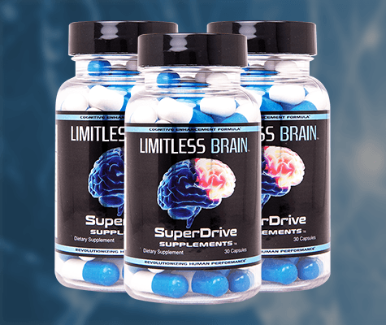
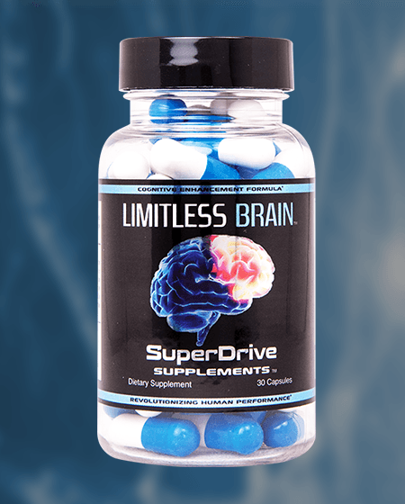

Sponsored Article is ROK's official account that publishes sponsored articles from advertisers. If you are interested hiring a sponsored article for your site, product, or service, visit our advertising page.


The following post was sponsored by Limitless Brain
Modern life has a habit of draining the energy out of people. Whether it’s the stress of work, commuting, paying the bills or eating a poor diet, most Westerners struggle to keep their energy levels up. However, succeeding at life, love and your career requires you to stay on the ball at all times, and you can only do that if you can keep your energy levels high. Here are four reasons why you need to maintain your energy levels…
When you’re tired and logy all the time, it makes you more likely to do the bare minimum to get by and pass up opportunities to improve your position in your business or career. People who are low-energy don’t get anywhere in life. While we all laughed at President Trump calling Jeb Bush “low-energy,” it was the truth: Trump’s boundless enthusiasm and constant fighting were responsible for his success in business and in the presidential race.
If you maintain your energy levels, you’ll have the drive to excel in your chosen career or grow your small business. High energy levels will provide you with the gumption necessary to power through obstacles in your day-to-day life and meet the challenges that you face. You won’t do this if you’re struggling to stay awake during your workday and retreating to video games as soon as you’re off the clock.
Women don’t find low-energy couch potatoes attractive. Talking to girls at a bar, a coffee shop or on the street requires you to be on the ball and paying attention. If you don’t have sufficient levels of energy, you’re likely to screw up on approaches and dates, making getting laid all the more difficult.
By maintaining high energy levels, you’ll be able to more effectively charm women and get them into bed. By using supplements to naturally increase your energy level, you can avoid being a couch potato and live your life to the fullest.

It may be a no-brainer, but it’s worth repeating: you need energy in order to lift well. Low energy levels mean you won’t perform as well in the gym. By boosting your energy levels naturally, you’ll be able to get the most out of your training sessions and make real progress towards your fitness goals.
Related to point number two, a low energy level will hurt your social interactions with people in general, not just girls. Increasing your energy naturally will make it easier for you to navigate social situations with ease. It’ll make you more charming and more able to carry yourself through challenging or stressful social situations, such as delivering a speech.
The benefits of maintaining your energy levels are so many and varied that I can’t go over all of them here, but these four should be more than enough. Without energy, your day to day life becomes much more difficult and taxing. By increasing your energy, you’ll be able to succeed in all areas of existence.
So how do you increase your energy levels so that you can excel in all aspects of life?

The simplest and most effective way to quickly increase your energy levels is through supplementation. Now I don’t mean going out and taking nasty supplements that’ll only leave you feeling drained or end up doing more bad to your body than good. The most effective, and most sustainable method of providing yourself energy to get through your day, is taking an all-natural approach. We’ve found that having high energy levels is great, but you also need the ability to focus, the ability to learn, and the ability to always be performing at your best, in order to do great things. The perfect answer is to get LIMITLESS BRAIN™, a very effective all-natural cognitive enhancement supplement.
“In addition to my working life, I am noticing boosts in energy around the house and more importantly… IN THE GYM!” – Troy N, Logistics, Gym Enthusiast
We’ve spent a ton of time trying out different ingredients and many combinations until we finally created our own custom formulation. We used it for a while and had a ton of success with it… and then we decided to make it available to the public.
Don’t just take our word for it, check out the LIMITLESS BRAIN™ Customer Reviews!
“’I’m actually very impressed! LIMITLESS BRAIN has a good selection of ingredients that seem to have the effect I want with no risks of downsides.” – Adam S, Entrepreneur, Bodybuilder, TheBioneer.com
LIMITLESS BRAIN™ contains 8 highly effective nootropic compounds that lead to increased focus, energy, memory, learning, cognitive output & more.
It’s made in the United States, in an FDA registered fully compliant facility.
It’s safe, it’s cheaper than your daily coffee habit, and most importantly- It actually works!

“After 3 months, I have noticed a significant increase in my cognitive abilities.” – Jeff J, Detective Sergeant
If you’re worried about being a ‘cheater’ – Who really cares. Give yourself an enormous advantage now with nootropics. The guys at the top already are.
“My coworkers commented that they like me taking my “Happy” pills. My wife states it makes me seem more calm.” – Ron H, Trauma Nurse
Increase your success socially, in the gym, with girls, and with business today by increasing your energy, focus, memory, & cognitive output with LIMITLESS BRAIN™
Black Friday Sales are now on! Sales end Monday, November 28th at 11:59PM EST.
Use the discount code: blackfriday20 at checkout for 20% off your order.
Click here to learn more about LIMITLESS BRAIN™ and try it for yourself today!